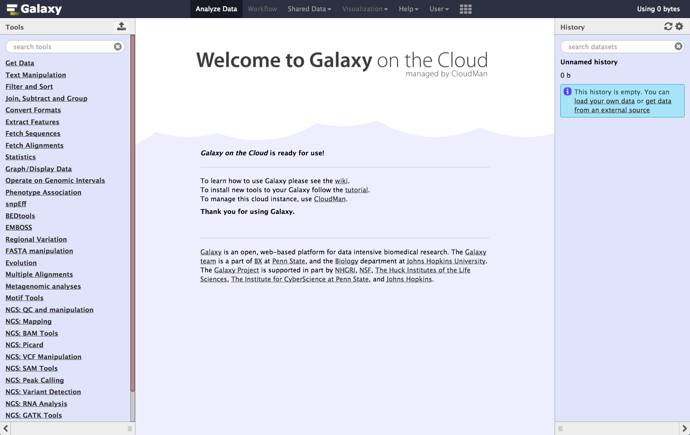

Options for using Galaxy
Contributors
Questions
Which Galaxy instance should I use?
Options for using Galaxy
Options for using Galaxy
Galaxy is available in many ways, each with different configurations and capabilities
Here are some options
Speaker Notes
Many workshops use Galaxy instances that go away once the workshop is done. This deck lists options for using Galaxy outside of a training context.
usegalaxy.org
- usegalaxy.org is the Galaxy Project’s public server
- Hosted at the Texas Advanced Computing Center (TACC)
- Lots of
- tools
- reference genomes
- compute power
- storage
- But also very busy
- Averages 250,000 jobs per month in 2016
- A single resource cannot scale to meet the demand of the entire world, nor can it support all wanted tools, genomes, …
Speaker Notes
- usegalaxy.org is the public server, it’s hosted at the Texas Advanced Computing Center.
- It has lots of tools, reference genomes, computer power, and free storage also.
- But it’s also very busy, in 2016 it had an average of 250,000 jobs per month, that sometimes could slow down the process
- The world of data analysis is huge and full of tools , genomes , and resources
-
A single resource cannot scale to meet the demand of the entire world
Public Galaxy Servers
.image-25[ ]
.image-25[
]
.image-25[ ]
.image-25[
]
.image-25[ ]
.image-25[]
.image-25[
]
.image-25[]
.image-25[ ]
]
Speaker Notes
- There are currently more than 80 public Galaxy servers, and the number keeps growing.
- for example, GalaxyEast, an open and powerful galaxy instance for integrative omics data analysis
- the Genomic Hyperbrowser to Manage and Analyze collections of genome-wide datasets.
- Galaxy Platform Directory which lists platforms where you can use or deploy your own Galaxy Server with minimal effort.
Public Galaxy Servers
- General purpose genomics servers
- Domain specific servers
Can be specific to:- Research methods: ChIP-Seq, RNA-Seq, repeats, …
- Organisms: Pathogens, phage, rice, poplars (!), …
- Non-genomic domains: image analysis, social science, natural language processing, …
- Tool servers
- Host specific tools to make them easy to access and run
Complete list: bit.ly/gxyServers
Speaker Notes
- There are three types of servers
- First is general-purpose genomics servers.
- The second is domain-specific servers, which can be specific to: Research methods, Organisms or Non-genomic domains
- the third type is Tool servers , the tool servers host specific tools to make them easy to access and run
Semi-public Galaxy services
Access based on geography or community membership
| Geography | Resource |
|---|---|
| Australia | Genomics Virtual Lab (GVL) |
| Canada | GenAP |
| Norway | Norwegian e-Infrastructure for Life Sciences (NeLS) |
| US | Jetstream |
Complete list: bit.ly/gxysemipublic
Speaker Notes
- There are some semi-public galaxy servers for which access is restricted according to the user’s geographic location or community membership
- In Australia there is the Genomics Virtual Lab
- In Canada there is GenAP
- In Norway there is Norwegian e-Infrastructure for Life Sciences
- In the US there is Jetstream
.pull-left[
Public clouds via CloudLaunch
.left[CloudLaunch currently only supports:]
- Jetstream (covered above)
- Amazon Web Services (AWS)
- You need to create an AWS account (which requires a credit card) and then provide your public and secret keys to CloudLaunch
]
.pull-right[ .image-75[] ]
Speaker Notes
- In addition to servers there is also Public clouds via Galaxy CloudLaunch
- Unfortunetly it currently only supports Jetstream and Amazon Web Services
- You first need to create an Amazon Web Services account (which requires a credit card) and then provide your public and secret keys to CloudLaunch
.pull-left[
CloudLaunch / CloudMan instances
- Comes with 100’s of tools and many pre-defined reference genomes
- CloudLaunch starts a CloudMan-based Galaxy instance
- CloudMan is a cloud management tool that moves much / all of the cloud management work into a Graphical user interface ]
.pull-right[ .image-75[] ]
Speaker Notes
- CloudLaunch Comes with hundredss of tools and many pre-defined reference genomes.
- CloudLaunch starts a Galaxy instance called CloudMan.
-
CloudMan is a cloud management tool that moves so much of the cloud management work into a Graphical user interface.
CloudMan
 ]
]CloudMan enables you to statically or dynamically scale compute power
- This example shows a Galaxy Server with a head node and one worker node, and that is configured to scale up to 5 worker nodes, if demand justifies it
- Cloud instances can be incredibly cost effective, but only if you are actually using them when they are up
- Paying to have a cloud instance up for two weeks that you only use for 8 hours is not cost effective
- It is very important to shut down and remove everything when you are done
Speaker Notes
- CloudMan enables you to statically or dynamically scale compute power
- Cloud instances can be incredibly cost effective only if you are actually using them when they are up.
- you can’t have a cloud instance up for two weeks when you only use for 8 hours
-
It is very important to shut down and remove everything when you are done
Run your own Galaxy locally
- Galaxy is open source software and can be installed on local compute infrastructure, from lab servers to institutional compute clusters
- Installing Galaxy locally is relatively easy, but
- the initial install does not include reference genomes and only has a few tools
- installing tools and genomes, setting up authentication, and connecting to institutional compute resources all takes work
- There are hundreds of local Galaxy installs around the world
- Installing tools and genomes has become much easier in recent years, and can now often be done with the Galaxy Admin GUI
- Authentication and connecting to institutional compute resources is still heavy lifting
Speaker Notes
- Galaxy is open source software which means it’s free to use locally
- it can be installed on local compute infrastructure, from lab servers to institutional compute clusters.
- Installing Galaxy locally is relatively easy, but you have to consider this
- the initial install does not include reference genomes and only has a few tools
- installing tools and genomes, setting up authentication, and connecting to institutional compute resources all takes work
- installing has become much easier and can now be done with the Galaxy Admin GUI
-
Authentication and connecting to institutional compute resources is still heavy lifting
Commercial support
- You can buy a preconfigured Galaxy server from BioTeam or NABE3 International
- Globus Genomics provides cloud-based Galaxy servers
- Commercially provided consulting and training are also available
Speaker Notes
- Commercial solutions are also available, for example:
- You can buy a preconfigured Galaxy server from BioTeam
-
Globus Genomics also provides cloud-based Galaxy servers
Which Galaxy instance to use?
- Choose based on
- size of datasets, available storage, backup
- data security
- computational requirements
- tools installed Speaker Notes
- In conclusion, choosing which Galaxy instance to use depends on multiple factors like: size of datasets, available storage, backup
- you also need to consider data security, computational requirements, and the tools installed
Thank you!
This material is the result of a collaborative work. Thanks to the Galaxy Training Network and all the contributors! Tutorial Content is licensed under
Creative Commons Attribution 4.0 International License.
Tutorial Content is licensed under
Creative Commons Attribution 4.0 International License.